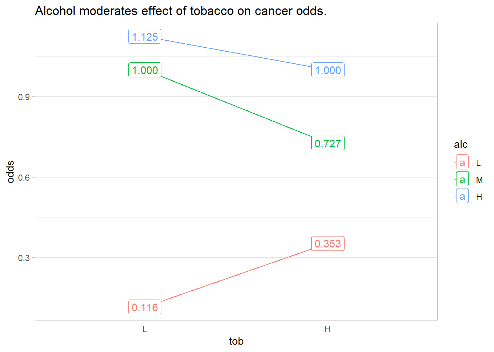

library(tidyverse)
dat <- esophLogistic Regression Interactions
Interpreting Interaction Effects in Logistic Regression
regression
Interpreting the coefficient estimators in a simple logistic regression is straightforward, but it gets messy when your model includes interaction effects.
The coefficient estimators in a simple logistic regression are straightforward to interpret, but it gets complicated when there are interaction effects. I’m going to work through that here.
Here is the simple model:
\[ \begin{eqnarray} y &=& X \beta \\ \mathrm{logit}(\pi) &=& \\ \ln\left(\frac{\pi}{1 - \pi}\right) &=& \end{eqnarray} \]
The model is estimated by \(\hat{y} = X\hat{\beta}\). Interpret \(\hat{\beta}\) as a \(\delta = x_1 - x_0\) unit change in \(x\) is associated with a \(\delta\hat{\beta}\) factor change in the log odds of \(y\). Take the exponent of \(\hat{\beta}\) and a \(\delta\) change is associated with a \(e^{\delta\hat{\beta}}\) factor change in the odds of \(y\). The factor change in the odds, \(y^{'} = y \cdot e^{\delta \hat{\beta}}\), means \(e^{\delta\hat{\beta}}\) is the odds ratio relative to the reference level of the predictor variable.
How does this change when there are interaction terms? I’m going to tackle that here using R dataset esoph for illustration.
Each row of esoph is a count of cancer cases from a case-control study. n_pos is a count of positive diagnoses and n_neg is a count of negative diagnoses. I’ll simplify the set to one age group, three levels of explanatory variable alcohol consumption (alcgp) and two levels of tobacco consumption (tobgp).
Show the code
dat <- dat |>
filter(agegp == "65-74") |>
rename(n_pos = ncases, n_neg = ncontrols) |>
mutate(
alc = factor(alcgp, ordered = FALSE),
alc = fct_collapse(
alc,
"L" = "0-39g/day",
"M" = "40-79",
"H" = "80-119",
"H" = "120+"
),
tob = factor(tobgp, ordered = FALSE),
tob = fct_collapse(
tob,
"L" = "0-9g/day",
"H" = c("10-19", "20-29", "30+")
)
) |>
summarize(.by = c(alc, tob), across(c(n_pos, n_neg), sum))dat alc tob n_pos n_neg
1 L L 5 43
2 L H 6 17
3 M L 17 17
4 M H 8 11
5 H L 9 8
6 H H 10 10Odds and Odds Ratios
The cancer odds is the ratio of the positive and negative diagnosis probabilities. Since the denominators are the same, the odds is just the ratio of counts.
\[ O = \frac{\pi_+}{\pi_-} = \frac{\mathrm{n_{pos} / n}}{\mathrm{n_{neg} / n}} = \frac{\mathrm{n_{pos}}}{\mathrm{n_{neg}}} \]
dat <- dat |> mutate(odds = n_pos / n_neg)The plot below shows cancer odds increase with tobacco use and with alcohol consumption, but their effects vary by their combination. If tobacco and alcohol had independent effects on cancer, you’d see parallel lines. Instead, alcohol “moderates” the effect of tobacco on cancer risk, and vice-versa.
Show the code
dat |>
ggplot(aes(x = tob, y = odds, color = alc, group = alc)) +
geom_point(stat = "summary", fun = sum) +
stat_summary(fun = sum, geom = "line") +
geom_label(aes(label = scales::number(odds, accuracy = .001))) +
labs(title = "Alcohol moderates effect of tobacco on cancer odds.")
You can combine these six combinations of alcohol and tobacco into 36 odds ratios (OR). I usually only care about comparisons to the reference groups, (tob = “L” and alc = “L”). It’s the top row in Table Table 1.
Show the code
odds_ratios <- merge(dat, dat, by = NULL) |>
mutate(
odds_1_lbl = paste0("alc", alc.x, "tob", tob.x),
odds_2_lbl = paste0("alc", alc.y, "tob", tob.y),
odds_ratio_lbl = paste(odds_1_lbl, odds_2_lbl, sep = ":"),
OR = odds.x / odds.y
) |>
select(
odds_1_lbl,
odds_2_lbl,
odds_ratio_lbl,
odds_1 = odds.x,
odds_2 = odds.y,
OR
)Show the code
odds_ratios |>
mutate(
odds_1 = scales::number(odds_1, accuracy = .001),
odds_2 = scales::number(odds_2, accuracy = .001),
OR = scales::number(OR, accuracy = .001),
y = paste(odds_1_lbl, odds_1)
) |>
select(-c(odds_ratio_lbl, odds_1_lbl, odds_1)) %>%
pivot_wider(
names_from = c(odds_2_lbl, odds_2),
values_from = OR,
names_sep = "\n"
) |>
gt::gt(rowname_col = "y") |>
gt::tab_header(title = "36 possible odds ratios formed from 6 odds.")
# flextable::flextable() %>%
# flextable::set_caption("36 possible odds ratios formed from 6 odds.") %>%
# flextable::theme_vanilla() %>%
# flextable::border(j = 1, border.right = officer::fp_border()) %>%
# flextable::bold(j = 1) %>%
# flextable::autofit()| 36 possible odds ratios formed from 6 odds. | ||||||
|---|---|---|---|---|---|---|
| alcLtobL 0.116 | alcLtobH 0.353 | alcMtobL 1.000 | alcMtobH 0.727 | alcHtobL 1.125 | alcHtobH 1.000 | |
| alcLtobL 0.116 | 1.000 | 0.329 | 0.116 | 0.160 | 0.103 | 0.116 |
| alcLtobH 0.353 | 3.035 | 1.000 | 0.353 | 0.485 | 0.314 | 0.353 |
| alcMtobL 1.000 | 8.600 | 2.833 | 1.000 | 1.375 | 0.889 | 1.000 |
| alcMtobH 0.727 | 6.255 | 2.061 | 0.727 | 1.000 | 0.646 | 0.727 |
| alcHtobL 1.125 | 9.675 | 3.188 | 1.125 | 1.547 | 1.000 | 1.125 |
| alcHtobH 1.000 | 8.600 | 2.833 | 1.000 | 1.375 | 0.889 | 1.000 |
Logistic Regression Model
Recall that a logistic regression fits the log odds of the response variable to the predictor variables. In the equation below, \(\pi\) is the event probability (in this case, a cancer diagnosis).
\[y = \mathrm{logit(\pi)} = \ln\left(\frac{\pi}{1-\pi}\right) = X\beta\]
Our data set is summarized so that n_pos and n_neg combine to specify the binary response to the predictor combinations (see ?glm()). Let’s model the log-odds of cancer as a function of alcohol and tobacco consumption, including their interaction.
Show the code
mdl <- glm(
cbind(n_pos, n_neg) ~ alc * tob,
data = dat,
family = binomial()
)
broom::tidy(mdl)
## # A tibble: 6 × 5
## term estimate std.error statistic p.value
## <chr> <dbl> <dbl> <dbl> <dbl>
## 1 (Intercept) -2.15 0.472 -4.55 0.00000526
## 2 alcM 2.15 0.584 3.69 0.000228
## 3 alcH 2.27 0.678 3.35 0.000812
## 4 tobH 1.11 0.670 1.66 0.0974
## 5 alcM:tobH -1.43 0.884 -1.62 0.106
## 6 alcH:tobH -1.23 0.941 -1.31 0.192The intercept term, -2.152, is the log odds of a positive cancer diagnosis for the reference group (tob = “L” and alc = “L”). The p-value is <.0001, so it is significantly different from 0. Its exponential, 0.116, equals \(e^\hat{Y}\), the odds of a positive cancer diagnosis for the reference group. That means a tob = “L”, alc = “L” person has an expected probability of cancer of \(e^\hat{Y} / (1 + e^\hat{Y}) =\) 10.4% (inverse logit formula).
The interpretation of the coefficient estimators, \(\hat{\beta}\), is “a \(\delta\) change in x is associated with a \(\delta\hat{\beta}\) change in the log-odds of y.” A difference in logs is the same as the log of their ratio, so you can express the change as a ratio.
\[ \begin{eqnarray} \delta\beta &=& \log(\pi / (1-\pi))|_{X_1} - \log(\pi / (1-\pi))|_{X_0}\\ &=& \log\left[\frac{\pi / (1-\pi)|_{X_1}}{\pi / (1-\pi)|_{X_0}}\right] \end{eqnarray} \]
A \(\delta = 1\) unit increase in tobH from 0 to 1 (from “L” to “H”) is associated with a 1.11 increase in the log-odds of cancer for a low-alcohol (alc = “L”) user. Log-odds are abstract, but since we can express the change in log-odds as the log of a ratio, we can take the exponential.
\[ e^{\delta\beta} = \frac{\pi / (1-\pi)|_{X_1}}{\pi / (1-\pi)|_{X_0}} = \mathrm{OR} \]
The exponentiated coefficient estimators equal the ratio of the odds after and before the change. I.e., they are odds ratios. A \(\delta\) unit change in x is associated with a factor \(e^{\delta\hat{\beta}}\) change in the odds of y.
Show the code
broom::tidy(mdl, exponentiate = TRUE)# A tibble: 6 × 5
term estimate std.error statistic p.value
<chr> <dbl> <dbl> <dbl> <dbl>
1 (Intercept) 0.116 0.472 -4.55 0.00000526
2 alcM 8.60 0.584 3.69 0.000228
3 alcH 9.67 0.678 3.35 0.000812
4 tobH 3.04 0.670 1.66 0.0974
5 alcM:tobH 0.240 0.884 -1.62 0.106
6 alcH:tobH 0.293 0.941 -1.31 0.192 We’ve just seen that the exponential of the intercept, exp(tobH) = 0.116, is the odds of a positive cancer diagnosis for the reference group (alc = L, tob = L). Now look at the three main-effects terms, alcM, alcH, and tobH. These terms are the expected change in the log odds of a positive cancer diagnosis associated with a \(\delta = 1\) unit change in the variable holding the other variable at the reference level. E.g., alcM is the change in the log odds associated with a tob = L person changing from alc = L to alc = M. The log of a difference equals the ratio of the logs (basic math), so the exponential of the alcM, alcH, and tobH is the ratio of the odds, the odds ratio (OR).
alcM =8.60 is the odds of a positive diagnosis foralc= M,tob= L over the odds of a positive diagnosis foralc= Ltob= L.
alcH =9.67 is the odds of a positive diagnosis foralc= H,tob= L over the odds of a positive diagnosis foralc= Ltob= L.
tobH =3.04 is the odds of a positive diagnosis foralcL= L,tob= H over the odds of a positive diagnosis foralc= Ltob= L.
Interaction Effects
Now we’re ready to tackle the interaction terms. The interaction terms measure the incremental change in the odds when you hold the other variable fixed at a different level. E.g., when estimating the change in the log odds of a positive diagnosis associated with a change from alc = L to alc = M, alcM:tobH is the adjustment associated with using a reference level tob = H instead of tob = H.
alcM * alcM:tobH= 8.60 * 0.24 = 2.06 is the odds of a positive diagnosis foralc= M,tob= H overalc= Ltob= H.tobH * alcM:tobH= 3.04 * 0.24 = 0.73 is the odds of a positive diagnosis foralc= M,tob= H overalc= Mtob= L.alcH * alcH:tobH= 9.67 * 0.29 = 2.83 is the odds of a positive diagnosis foralc= H,tob= H overalc= Ltob= H.tobH * alcH:tobH= 3.04 * 0.29 = 0.89 is the odds of a positive diagnosis foralc= H,tob= H overalc= Htob= L.
But wait - there’s two more odds ratios we can estimate! The effects are multiplicative, so we can calculate the odds ratios of changing both alc and tob vs the reference group.
alcM * tobH * alcM:tobH= 8.60 * 3.04 * 0.24 = 6.25 is the odds of a positive diagnosis foralc= M,tob= H overalc= Ltob= L.alcH * tobH * alcH:tobH= 9.67 * 3.04 * 0.29 = 8.60 is the odds of a positive diagnosis foralc= H,tob= H overalc= Ltob= L.
If you are following along, you see we’ve calculated 7 of the odds ratios from Table 1. In fact, you can calculate all 36 odds ratios through combinations of main effects and interaction effects.
Show the code
alcLtobL <- exp(coef(mdl)["(Intercept)"])
alcLtobH <- exp(coef(mdl)["tobH"])
alcMtobL <- exp(coef(mdl)["alcM"])
alcMtobH <- exp(coef(mdl)["alcM"]) *
exp(coef(mdl)["tobH"]) *
exp(coef(mdl)["alcM:tobH"])
alcHtobL <- exp(coef(mdl)["alcH"])
alcHtobH <- exp(coef(mdl)["alcH"]) *
exp(coef(mdl)["tobH"]) *
exp(coef(mdl)["alcH:tobH"])
tribble(
~num , ~den , ~OR ,
"alcLtobL" , "1" , alcLtobL ,
"alcLtobH" , "1" , alcLtobL * alcLtobH ,
"alcMtobL" , "1" , alcLtobL * alcMtobL ,
"alcMtobH" , "1" , alcLtobL * alcMtobH ,
"alcHtobL" , "1" , alcLtobL * alcHtobL ,
"alcHtobH" , "1" , alcLtobL * alcHtobH ,
"alcLtobL" , "alcLtobL" , exp(coef(mdl)["(Intercept)"]) / exp(coef(mdl)["(Intercept)"]) ,
"alcLtobH" , "alcLtobL" , alcLtobH ,
"alcMtobL" , "alcLtobL" , alcMtobL ,
"alcMtobH" , "alcLtobL" , alcMtobH ,
"alcHtobL" , "alcLtobL" , alcHtobL ,
"alcHtobH" , "alcLtobL" , alcHtobH ,
"alcLtobL" , "alcLtobH" , 1 / alcLtobH ,
"alcLtobH" , "alcLtobH" , alcLtobH / alcLtobH ,
"alcMtobL" , "alcLtobH" , alcMtobL / alcLtobH ,
"alcMtobH" , "alcLtobH" , alcMtobH / alcLtobH ,
"alcHtobL" , "alcLtobH" , alcHtobL / alcLtobH ,
"alcHtobH" , "alcLtobH" , alcHtobH / alcLtobH ,
"alcLtobL" , "alcMtobL" , 1 / alcMtobL ,
"alcLtobH" , "alcMtobL" , alcLtobH / alcMtobL ,
"alcMtobL" , "alcMtobL" , alcMtobL / alcMtobL ,
"alcMtobH" , "alcMtobL" , alcMtobH / alcMtobL ,
"alcHtobL" , "alcMtobL" , alcHtobL / alcMtobL ,
"alcHtobH" , "alcMtobL" , alcHtobH / alcMtobL ,
"alcLtobL" , "alcMtobH" , 1 / alcMtobH ,
"alcLtobH" , "alcMtobH" , alcLtobH / alcMtobH ,
"alcMtobL" , "alcMtobH" , alcMtobL / alcMtobH ,
"alcMtobH" , "alcMtobH" , alcMtobH / alcMtobH ,
"alcHtobL" , "alcMtobH" , alcHtobL / alcMtobH ,
"alcHtobH" , "alcMtobH" , alcHtobH / alcMtobH ,
"alcLtobL" , "alcHtobL" , 1 / alcHtobL ,
"alcLtobH" , "alcHtobL" , alcLtobH / alcHtobL ,
"alcMtobL" , "alcHtobL" , alcMtobL / alcHtobL ,
"alcMtobH" , "alcHtobL" , alcMtobH / alcHtobL ,
"alcHtobL" , "alcHtobL" , alcHtobL / alcHtobL ,
"alcHtobH" , "alcHtobL" , alcHtobH / alcHtobL ,
"alcLtobL" , "alcHtobH" , 1 / alcMtobH ,
"alcLtobH" , "alcHtobH" , alcLtobH / alcHtobH ,
"alcMtobL" , "alcHtobH" , alcMtobL / alcHtobH ,
"alcMtobH" , "alcHtobH" , alcMtobH / alcHtobH ,
"alcHtobL" , "alcHtobH" , alcHtobL / alcHtobH ,
"alcHtobH" , "alcHtobH" , alcHtobH / alcHtobH
) %>%
pivot_wider(names_from = num, values_from = OR) %>%
flextable::flextable() %>%
flextable::set_caption(
"Odds ratios calculated from regression coefficients."
) %>%
flextable::theme_vanilla() %>%
flextable::border(j = 1, border.right = officer::fp_border()) %>%
flextable::bold(j = 1) %>%
flextable::colformat_double(digits = 3) %>%
flextable::autofit()den | alcLtobL | alcLtobH | alcMtobL | alcMtobH | alcHtobL | alcHtobH |
|---|---|---|---|---|---|---|
1 | 0.116 | 0.353 | 1.000 | 0.727 | 1.125 | 1.000 |
alcLtobL | 1.000 | 3.035 | 8.600 | 6.255 | 9.675 | 8.600 |
alcLtobH | 0.329 | 1.000 | 2.833 | 2.061 | 3.187 | 2.833 |
alcMtobL | 0.116 | 0.353 | 1.000 | 0.727 | 1.125 | 1.000 |
alcMtobH | 0.160 | 0.485 | 1.375 | 1.000 | 1.547 | 1.375 |
alcHtobL | 0.103 | 0.314 | 0.889 | 0.646 | 1.000 | 0.889 |
alcHtobH | 0.160 | 0.353 | 1.000 | 0.727 | 1.125 | 1.000 |
About the p-Values
Neither of the interaction term p-values were significant at the .05 level. That means the slopes of the moderation lines are not significantly different from the reference levels line.
If neither interaction term is significant, that means it was unnecessary to control for the interaction in the model. The main effect is the same at all levels of the controlling variables.
If an interaction term is significant, but the main effect is not significant, it means the combined effects differ from the reference group, but changing only one variable is not different from the reference group. In our example, it would mean alcM & tobH differs alc = “L” and tob = “L”, but not from either alcL & tobH or alcM & tobL.
If both the main effect and the interaction effect is significant, it means you must interpret your results relative to the reference group.
This raises another question. How do you report the p-value of the combined effect of two or more coefficients? The theoretical answer is that you need to combine the coefficient estimate variances to calculate a new t-statistic. Say you fit a model
\[ y = \beta_0 + \beta_1 \mathrm{alc} + \beta_2 \mathrm{tob} + \beta_3 \mathrm{alc:tob} + \epsilon \]
and your fitted model coefficient estimators include \(\hat{\beta}_{1M}\) (Medium Alcohol), \(\hat{\beta}_{2H}\) (High Tobacco), and \(\hat{\beta}_{3MH}\) (MediumAlcohol:HighTobacco). The estimator for the combined effect of Medium Alcohol & High Tobacco relative to the reference group Low Alcohol & Low Tobacco, \(\hat{\alpha}\), is \(\hat{\alpha} = \hat{\beta}_{1M} + \hat{\beta}_{2H} + \hat{\beta}_{3MH}\). The p-value associated with \(\hat{\alpha}\) is \(p = P(T>t)\) where \(t = \hat{\alpha} / \mathrm{SE}(\hat{\alpha})\) (same as for any coefficient estimator). The difficulty is in retrieving \(\mathrm{SE}(\hat{\alpha})\). It equals the squre root of te cobined coefficient estimator variances (Wikipedia), \(\mathrm{SE}(\alpha) = \sqrt{\mathrm{Var}(\alpha)}\):
\[ \begin{aligned} \mathrm{Var}(\alpha) = {} & \mathrm{Var}(\hat{\beta}_{1M}) + \mathrm{Var}(\hat{\beta}_{2H}) + \mathrm{Var}(\hat{\beta}_{3HM}) + \\ & 2 \left(\mathrm{Cov}(\hat{\beta}_{1M}\hat{\beta}_{2H}) + \mathrm{Cov}(\hat{\beta}_{1M}\hat{\beta}_{3MH} + \mathrm{Cov}(\hat{\beta}_{2H}\hat{\beta}_{3MH}))\right) \end{aligned} \]
Let’s see this calculation by taking elements from the model variance-covariance matrix.
Show the code
mdl_vcov <- mdl %>%
vcov() %>%
data.frame() %>%
rownames_to_column()
var_alcM <- mdl_vcov %>%
filter(rowname == "alcM") %>%
pull("alcM")
var_tobH <- mdl_vcov %>%
filter(rowname == "tobH") %>%
pull("tobH")
var_alcMtobH <- mdl_vcov %>%
filter(rowname == "alcM:tobH") %>%
pull("alcM.tobH")
cov_alcM_tobH <- mdl_vcov %>%
filter(rowname == "alcM") %>%
pull("tobH")
cov_alcM_alcMtobH <- mdl_vcov %>%
filter(rowname == "alcM") %>%
pull("alcM.tobH")
cov_tobH_alcMtobH <- mdl_vcov %>%
filter(rowname == "tobH") %>%
pull("alcM.tobH")
# alpha
(alpha <- coef(mdl)["alcM"] + coef(mdl)["tobH"] + coef(mdl)["alcM:tobH"])
## alcM
## 1.833308
# SE for Medium Alcohol + High Tobacco
(se <- sqrt(
var_alcM +
var_tobH +
var_alcMtobH +
2 * (cov_alcM_tobH + cov_alcM_alcMtobH + cov_tobH_alcMtobH)
))
## [1] 0.6626948
# t
(t <- alpha / se)
## alcM
## 2.766445
# p-value
(p_value <- pt(abs(t), Inf, lower.tail = FALSE) * 2)
## alcM
## 0.005667121Happily, there is a package emmeans that calculates both the combined coefficient effects, and these p-values.
Show the code
emm <- emmeans::emmeans(mdl, ~ alc * tob)
emm_contrast <- emmeans::contrast(emm, method = "revpairwise", adjust = "none")
emm_contrast %>%
as_tibble() %>%
filter(str_detect(contrast, "L L$"))# A tibble: 5 × 6
contrast estimate SE df z.ratio p.value
<chr> <dbl> <dbl> <dbl> <dbl> <dbl>
1 M L - L L 2.15 0.584 Inf 3.69 0.000228
2 H L - L L 2.27 0.678 Inf 3.35 0.000812
3 L H - L L 1.11 0.670 Inf 1.66 0.0974
4 M H - L L 1.83 0.663 Inf 2.77 0.00567
5 H H - L L 2.15 0.651 Inf 3.31 0.000942There it is, second from bottom.
Key Take-aways
What have we learned?
Exponentiated coefficient estimates are odds ratios. The interaction effects are multiplicative moderators of the main effects.
When the p-value of an interaction is significant, that means the slopes of the odds lines in your figure are statistically different from each other.
Combinations of main-effects and interaction effects always get you a comparison of one group vs another group.
Use the emmeans package to calculate odds ratios and their associated p-values.